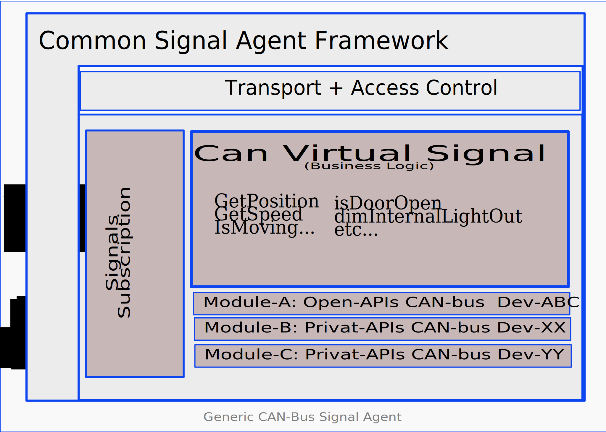
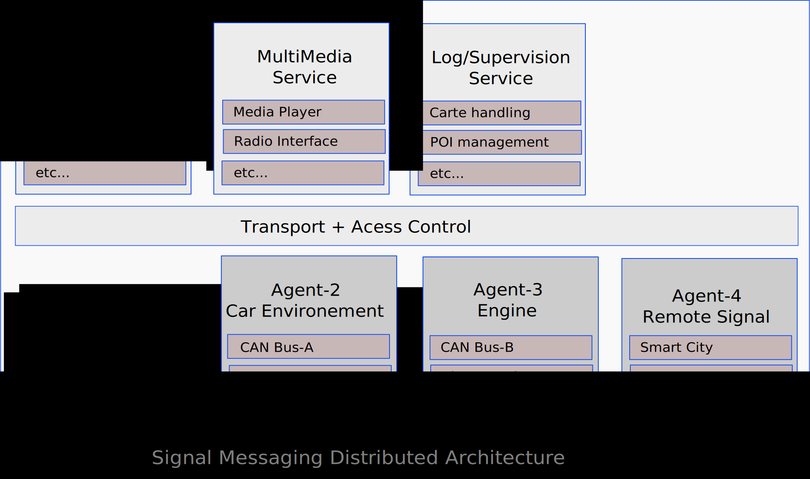

categories: architecture, appfw tags: architecture, signal, message layout: techdoc
Table of Content
- TOC {:toc}
Context
Automotive applications need to understand in real time the context in which vehicles operate. In order to do so, it is critical for automotive application to rely on a simple, fast and secure method to access data generated by the multiple sensors/ECU embedded in modern cars.
This signaling problem is neither new, neither unique to the automotive and multiple solutions often described as Message Broker or Signaling Gateway have been around for a while. In the context of Linux for Automotive, the "Automotive Message Broker Daemon " (aka AMBd) has been around for few years and is pretty well known within the Linux Automotive community.
The present discussion is a proposal to enhance existing signaling/message models. Our proposal relies on [[APbinder]] binder/bindings model to minimize complexity while keeping the system fast and secure. We propose a model with multiple transport options and a full set of security feature to protect the agent generating the signal as well as consuming them.
Objectives
Our objectives are to solve following 3 key issues:
- reduce as much as possible the amount of exchanged data to the meaningful subset really used by applications
- offer a high level API that obfuscates low level and proprietary interface to improve stability in time of the code
- hide specificities of low level implementation as well as the chosen deployment distribution model.
To reach first objective, events emission frequency should be controlled at the lowest level it possibly can. Aggregation, composition, treatment, filtering of signals should be supported at software level when not supported by the hardware.
Second objectives of offering long term stable hight level API while allowing flexibility in changing low level implementation may look somehow conflicting. Nevertheless by isolating low level interface from high level and allowing dynamic composition it is possible to mitigate both objectives.
Architecture
Good practice is often based on modularity with clearly separated components assembled within a common framework. Such modularity ensures separation of duties, robustness, resilience and achievable long term maintenance.
This document uses the term "AGENT" to define a specific instance of this proposed common framework used to host a group of dedicated separated components that handle targeted signals/events. Each agent exposes to services/applications the signals/events it is responsible for.
As an example, a CAN-bus agent may want to mix non-public proprietary API with CANopen compatible devices while hiding this complexity to applications. The goal is on one hand to isolate proprietary piece of code in such a way that it is as transparent as possible for the remaining part of the architecture. On a second hand isolation of code related to a specific device provides a better separation of responsibilities, keeping all specificity related to a given component clearly isolated and much easier to test or maintain. Last but not least if needed this model may also help to provide some proprietary code directly as binary and not as source code.

While in some cases it may be chosen to implement a single agent responsible for everything, other scenarii may chose to split responsibility between multiple agents. Those multiple agents may run on a single ECU or on multiple ECUs. Chosen deployment distribution strategy should not impact the development of components responsible for signals/events capture. As well as it should have a loose impact on applications/services consuming those events.
A distributed capable architecture may provide multiple advantages:
- it avoids to concentrate complexity in a single big/fat component.
- it leverages naturally multiple ECUs and existing network architecture
- it simplifies security by enabling isolation and sandboxing
- it clearly separates responsibilities and simplifies resolution of conflicts

Performance matters. There is a trade-off between modularity and efficiency. This is specially critical for signals where propagation time from one module to the other should remain as short as possible and furthermore should consume as little computing resources as possible.
A flexible solution should provide enough versatility to either compose modules in separate processes; either chose a model where everything is hosted within a single process. Chosen deployment model should have minor or no impact on development/integration processes. Deployment model should be something easy to change, it should remain a tactical decision and never become a structuring decision.
Nevertheless while grouping modules may improve performance and reduce resource consumption, on the other hand, it has a clear impact on security. No one should forget that some signals have very different level of security from other ones. Mixing everything within a single process makes all signal's handling within a single security context. Such a decision may have a significant impact on the level on confidence one may have in the global system.
Providing such flexibility constrains the communication model used by modules:
- The API of integration of the modules (the API of the framework) that enables the connection of modules must be independent of the implementation of the communication layer
- The communication layer must be as transparent as possible, its implementation shouldn't impact how it is used
- The cost of the abstraction for modules grouped in a same process must be as little as possible
- The cost of separating modules with the maximum of security must remain as minimal as possible
Another point impacting performance relates to a smart limitation on the number of emitted signals. Improving the cost of sending a signal is one thing, reducing the number of signals is an other one. No one should forget that the faster you ignore a useless signal the better it is. The best way to achieve this is by doing the filtering of useless signal as close as possible of the component generating the signal and when possible directly at the hardware level.
To enable the right component to filter useless signals, consumer clients must describe precisely the data they need. Then services and agent must organise their computing to provide only expected data at the expected rate. Also, any data not required by any client should at the minimum never be transmitted. Furthermore when possible then should even not be computed at all.
Describing expected data in a precise but nevertheless simple manner remains a challenge. It implies to manage:
- requested frequency of expected data
- accuracy of data to avoid detection of inaccurate changes
- when signaling is required (raising edge, falling edge, on maintained state, ...),
- filtering of data to avoid glitches and noise,
- composition of signals both numerically and logically (adding, subtracting, running logical operators like AND/OR/XOR, getting the mean, ...)
- etc...
It is critical to enable multiple features in signal queries to enable modules to implement the best computing method. The best computing method may have an impact on which device to query as well as on which filters should be applied. Furthermore filtering should happen as soon as possible and obviously when possible directly at hardware level.
Leveraging Existing solutions
Unfortunately, there is no existing solution ready to be integrated. Obviously some parts of required technologies to implement such solution exist, but a significant part of the work remains to be done. If we look at the main building blocks used in the proposed architecture.
Transport Solutions
D-Bus is the standard choice for Linux, nevertheless it has some serious performance limitation due to internal verbosity. Nevertheless because it is available and pre-integrated with almost every Linux component, D-Bus may still remains an acceptable choice for signal with low rate of emission (i.e. HMI).
For a faster communication, Jaguar-Land-Rover proposes a memory shared signal infrastructure. Unfortunately this solution is far from solving all issues and has some drawbacks. Let check the open issues it has:
- there is no management of what requested data are. This translate in computing data even when not needed.
- on top of shared memory, an extra side channel is required for processes to communicate with the daemon.
- a single shared memory implies a lot of concurrency handling. This might introduce drawbacks that otherwise would be solved through communication buffering.
ZeroMQ, NanoMSG and equivalent libraries focused on fast communication. Some (e.g. ZeroMQ) come with a commercial licensing model when others (e.g. NanoMSG) use an open source licensing. Those solutions are well suited for both communicating inside a unique ECU or across several ECUs. However, most of them are using Unix domain sockets and TCP sockets and typically do not use shared memory for inter-process communication.
Last but not least Android binder, Kdbus and other leverage shared memory, zero copy and sit directly within Linux kernel. While this may boost information passing between local processes, it also has some limitations. The first one is the non support of a multi-ECU or vehicle to cloud distribution. The second one is that none of them is approved upstream in kernel tree. This last point may create some extra burden each time a new version of Linux kernel is needed or when porting toward a new hardware is required.
Query and Filtering Language
Description language for filtering of expected data remains an almost green field where nothing really fit signal agent requirements. Languages like Simulink or signal processing graphical languages are valuable modelling tools. Unfortunately they cannot be inserted in the car. Furthermore those languages have many features that are not useful in proposed signal agent context and cost of integrating such complex languages might not be justified for something as simple as a signal agent. The same remarks apply for automation languages.
Further investigations would be needed. Even if there is no obvious solutions fit or need. Existing solution use a different context or industry may exist or nearby solutions might worse the value be adapted to our requirements.
Describing Signal Subscriptions using JSON
JSON is a rich structured representation of data. For requested data, it allows the expression of multiple features and constraints. JSON is both very flexible and efficient. There are significant advantages in describing requested data at subscription time using a language like JSON. Another advantage of JSON is that no parser is required to analyse the request.
Here is an example of what could be a subscription specification:
{
"define": {
"speed": {
"signal": "average-wheel-speed",
"unit": "km/h",
"accuracy": 0.5,
"filtered": "yes"
},
"expect": {
"value": "speed",
"when": {
"cross": { "speed": [ 50, 90, 110, 130 ] }
},
"max-rate": 1
}
}
A generic library to handle such request definition should be provided. This library should allow the agent to process the request, search if its business logic or any of present low level modules support requested signal. Finally it should notify the concerned lower module to optimise signal generation.
While such an approach might not be the most common approach, organisation like Signal-K already uses JSON to transmit NMEA-2000 signals on boats. Others might already used it as well and some further investigations on existing solutions would be needed before moving in such a direction.
Naming Signal
Naming and defining signals is something very complex. For example just speed, as a signal, is difficult to define. What unit is used (km/h, M/h, m/s, ...)? From which source (wheels, GPS, AccelMeter)? How was it captured (period of measure, instantaneous, mean, filtered)?
In order to simplify application development we should nevertheless agree on some naming convention for key signals. Those names might be relatively complex and featured. They may include a unit, a rate, a precision, etc.
How these names should be registered, documented and managed is out of scope of this document but extremely important and at some point in time should be addressed. Nevertheless this issue should not prevent from moving forward developing a modern architecture. Developers should be warned that naming is a complex task, and that in the future naming scheme should be redefined, and potential adjustments would be required.
Leveraging AGL binder
Such a model is loosely coupled with AGL binder. Low level signal modules as well as virtual signal components may potentially run within any hosting environment that would provide the right API with corresponding required facilities. Nevertheless leveraging [[APbinder]] has multiple advantages. It already implements event notification to support a messaging/signaling model for distributed agents. It enables a subscribe model responding to the requirement and finally it uses JSON natively.
This messaging/signalling model already enforces the notion of subscription for receiving data. It implies that unexpected data are not sent and merely not computed. When expected data is available, it is pushed to all waiting subscriber only one time.
The [[APbinder]] provides transparency of communication. It currently implements the transparency over D-Bus/Kdbus and WebSocket. Its transparency mechanism of communication is easy to extend to other technologies: pools of shared memory or any proprietary transport model.
When modules are loaded by the same service agent, the [[APbinder]] provides transparently "in-memory" communication. This in-memory communication is really efficient: on one hand, the exchanged JSON objects are not serialized (because not streamed), on the other hand, those JSON objects provide a high level of abstraction able to transfer any data.
Technically an agent is a standard [[APbinder]] service. Therefore Signal/Agent inherits of security protection through SMACK, access control through Cynara, transparency of API to transport layer, life cycle management, ... Like any other [[APbinder]] service Signal/Agent is composed of a set of bindings. In signal agent specific case, those bindings are in fact the "signal modules".
The proposed model allows to implement low level dependencies as independent signal modules. Those modules when developed are somehow like "Lego Bricks". They can be spread or grouped within one or multiple agents depending on deployment constraints (performance, multi-ECU, security & isolation constraints, ...).
The model naturally uses JSON to represent data.
Multi-ECU and Vehicule to Cloud interactions: while this might not be a show stopper for current projects, it is obvious that in the near future Signal/Agent should support a fully distributed architectures. Some event may come from the cloud (i.e. request to start monitoring a given feature), some may come from SmartCity and nearby vehicles, and last but not least some may come from another ECU within the same vehicle or from a virtualized OS within the same ECU (e.g. cluster & IVI). In order to do so, Signal modules should enable composition within one or more [[APbinder]] inside the same ECU. Furthermore they should also support chaining with the outside world.

- Application requests Virtual Signal exactly like if it was a low level signal
- Agent Signal has direct relation to low level signal
- Agent needs to proxy to an other agent inside the same ECU to access the signal
- Signal is not present on current ECU. Request has to be proxied to the outside world
Work to be Done
As stated before, the foundation for event signaling is already in place in development branch of [[APbinder]]. Nevertheless in order to provide a real added value to developers missing components should be developed.
- Agent Core Components
- Create a simple configuration model to move from low level signal description to something more generic that could help to abstract the hardware.
- Search for an already existing library that provide high level signal subscription and adapt it. If no such library exist, create it.
- Implement some form of introspection to allow application to discover the list of signal supported by a given agent.
- Few Common Agents
- Provide at least a reference implementation for a generic CAN agent
- Agent simulation, most developers may not have access to physical devices during development phase, some form of simulator would be more than welcome.
- etc ...
Reusing existing/legacy code
Whatever the final architecture will be, it is important not to forget how to leverage existing/legacy code within the new model. There are multiple sources for reusable code that can be classified in two main categories:
-
Low Level Typically those existing code interface with CAN-BUS or any other low level device. Some AMBd[[6]] plugins could be a good source of input for low level implementation. But also more community oriented projects like: ArduPilot/Rover[[7]] Barometer or Camera interfaces[[8]].
-
Virtual Signal In many cases accessing to low level signal is not enough. Low level information might need to be composed (i.e. GPS+Gyro+Accel). Raw value might need to be processed (i.e.: change unit, average on the last xx seconds, ...). Writing this composition logic might be quite complex and reusing existing libraries like: LibEkNav for Kalman filtering [[9]] or Vrgimbal for 3 axes control[[10]] may help saving a lot of time.
Proposal
In order to start moving forward one option would be to take a concrete example with some existing can devices (i.e. the one from MicroChips use within ALS demo).
An other option would be to leverage Porter+Cogent-Extension[[11]] that supports both a GPS and a 9 axis sensor to implement a smart geoposition agent. We could reuse some existing code like the one from Rover[[7]] to provide a fine grain positioning service and then interface this new GeoPositioning agent with an application like GpsNavi[[12]] to get a end-to-end demonstrator.